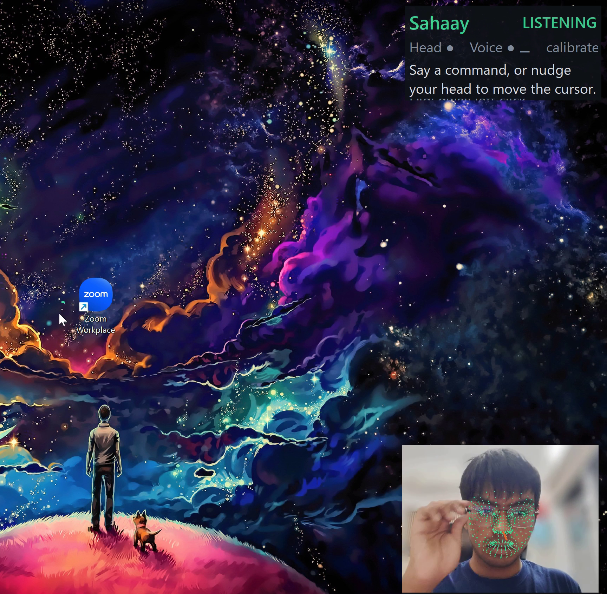
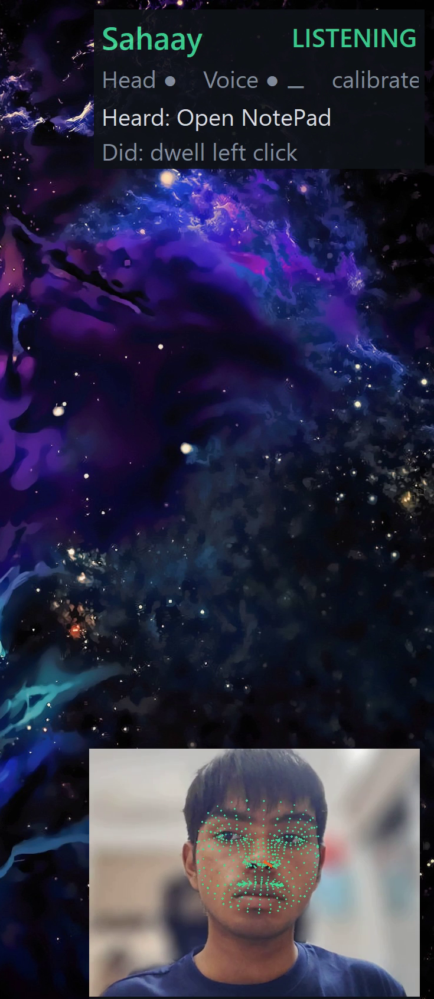
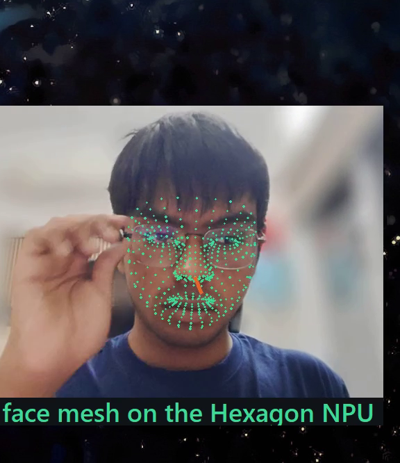
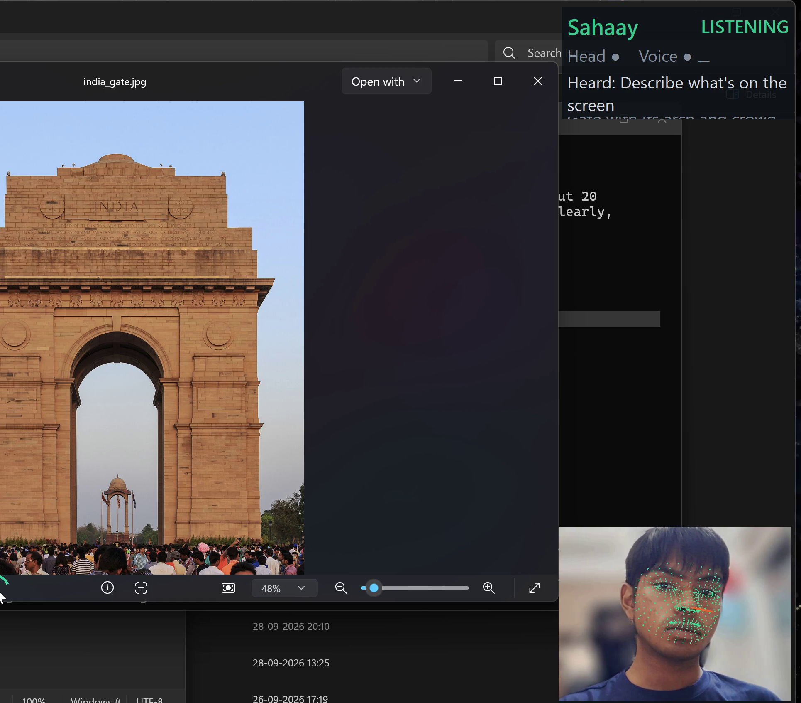

The product, running
Screenshots from Sahaay on a Snapdragon X2 Elite laptop.

shot_cursor.png
'">
Hands-free
Head cursor with dwell ring and the live panel: face tracking on the NPU every frame.

shot_command.png
'">
Voice command
"Open Notepad" heard by Whisper and executed; the panel shows what was heard and done.

shot_face.png
468 landmarks on the NPU, live in the corner window: head pose drives the cursor, blinks click.

shot_describe.png
"Describe what's on the screen": Qwen3-VL-4B on the NPU identifies India Gate and the crowd.